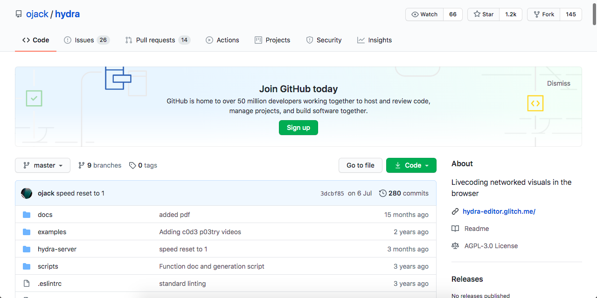

Hydra
https://ojack.xyz/archive.html Close up of the screens (running TidalCycles and HydraSynth) from tech polyglot @khoparzi and Mohna
— shailendra 🤖👨🎨 (@ziscore) February 4, 2020
Last Sunday at @IGIBSocial on Processing Community Day pic.twitter.com/RJecAIxQiO
Had a marathon three hour long @hydra_patterns online workshop session with the folks from @timeblurIndia @praveen200s @samarthishere and many more.#QuaratineLife pic.twitter.com/Dmft0o88Xy
— Abhinay Khoparzi (@khoparzi) March 22, 2020
@MikeCj184 got started on his adventures with #livecoding pic.twitter.com/uvWxTYTitj
— Abhinay Khoparzi (@khoparzi) March 22, 2020